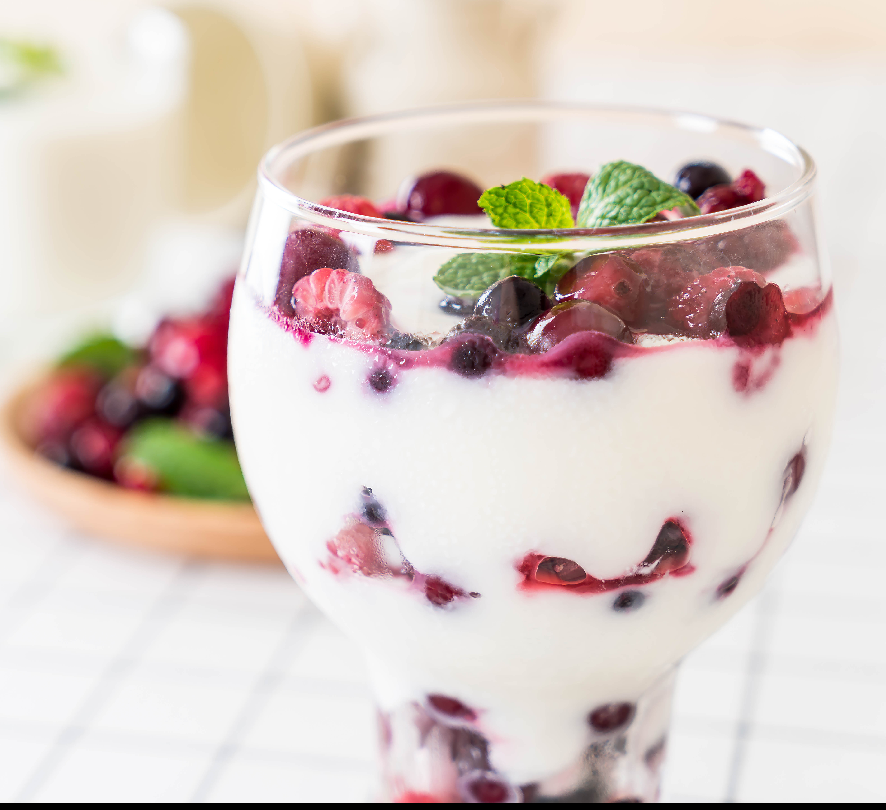

Yogurt Parfait
A flavored custard containing whipped cream and syrup frozen without stirring.
Specified ingredient and thier quantity needed in preparation of Yogurt Parfait
| Ingredient |
Amount(Quantity) |
| Bananas |
Four(4) Whole |
| Low-fat Vanilla Yogurt |
Three(3) Cups(24 ounces) |
| Low-fat Granola |
Two(2) Cups |
NOTE: The ingredients above are absolute, no other ingredients should be added
Steps in Preparing this Recipe
- Locate and organize your ingredients. You'll find the ingredients in a list above.
The great thing about
parfait ingredients is that it is completely customizable.
Keep them in a place near each other on your work station.
- Place the glass in the middle.
You'll be putting the ingredients in this container,
so try to keep it near the food items.
Chill this glass beforehand in the freezer or fridge.
This makes the food cool and keeps it fresh.
- Add a quarter cup of yogurt. Don't add all of the yogurt yet; you still
need room in the glass for the other ingredients.
At this point, you may
add any other ingredients to the parfait.
It is your choice; this is what makes a parfait so unique.
You can add strawberry
jam for some sweetness, cereal, oatmeal, granola, fruit, or whatever else
you like.
Be sure to leave some room in the cup for the final step.
- Add the other three-fourths of a cup of yogurt.
You want to have more yogurt on the top than on the bottom.
If you have too much on the bottom all of your cereal and fruit will sink and get soggy in the yogurt.
I recommend using plain yogurt so the real flavor of the ingredients come out
but if you want to intensify
the taste of the fruit then add a flavored yogurt. You can substitute a flavored yogurt for a fruit.
Serve the dish fresh, preferably right after you have prepared it.
If you don't like I said the granola or cereal will get soggy.
- Finished
your recipe is finally ready